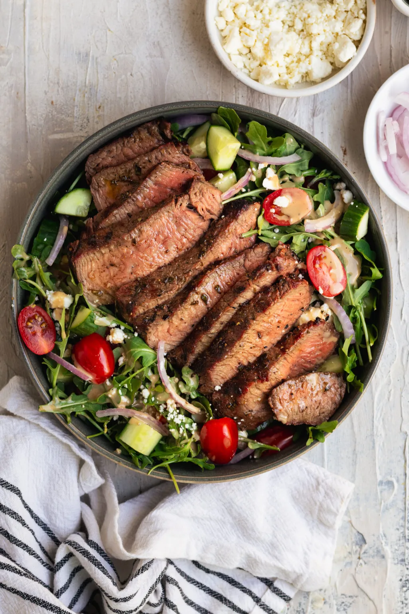

Steak Salad
This steak salad recipe is made in partnership with the Washington Beef Commission. Thank you for supporting the brands that support For the Love of Gourmet.

If you’re intimidated by grilling, don’t be! These steaks will cook pretty quickly and all you need is a meat thermometer to make sure you pull them off at the right time.
ingredients
Dressing
- Olive oil
- Sherry vinegar
- Salt
- Pepper
- Minced garlic
Salad
- Cucumber
- Green pepper
- Tomato
- Red onion
- Feta
- Bistro salad leaves
Steps
- Fry the steak on a medium heat. Whilst cooking, begin on the salad steps below
- Combine the dressing ingredients in a bowl
- Chop the salad ingredients into small pieces and add to a large bowl
- Add the dressing and combine
- Remove the steak from the heat when cooked to taste and allow to rest
- slice the steak and serve on top of a bed of salad.